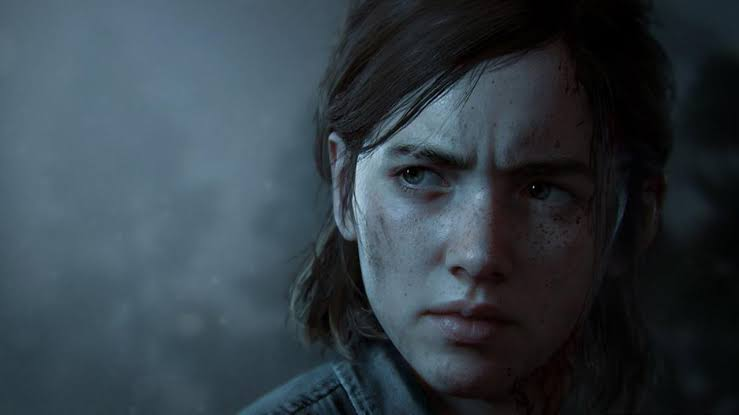
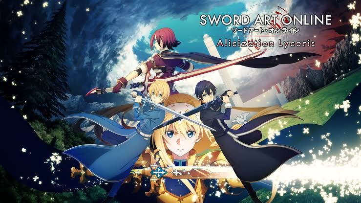
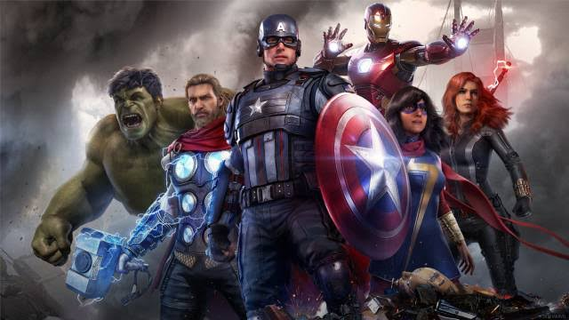

The Last of Us 2 es la secuela de The Last of Us, uno de los juegos más aclamados de la consola PS3, que apareció en 2015 en PS4 en versión remasterizada.

10/7/2020 Sword Art Online: Alicization Lycoris
PC
Xbox One
PS4
Sword Art Online: Alicization Lycoris es una nueva entrega de la saga de juegos de rol japoneses de Bandai Namco. En esta ocasión, y siguiendo los eventos del anime, el juego nos pondrá en el papel de Kirito y nos llevará al Underworld

4/9/2020 Marvel's Avengers
PC
Xbox One
PS4
Marvel's Avengers es un videojuego de acción y aventura para un jugador con opciones de cooperativo online que nos invitará a encarnar a los héroes más poderosos de la Tierra.

17/9/2020 Cyberpunk 2077
PC
Xbox One
PS4
Cyberpunk 2077 es el nuevo videojuego de rol en primera persona con estructura de mundo abierto de CD Projekt RED. Los padres de The Witcher nos presentan para Xbox One, PC y PS4 una aventura de corte futurista y ciberpunk en la que encarnaremos a un personaje diseñado a nuestra medida y en la que tendremos que sobrevivir en una peligrosa urbe plagada de corporaciones, ciborgs, bandas y las más variadas amenazas tecnológicas.